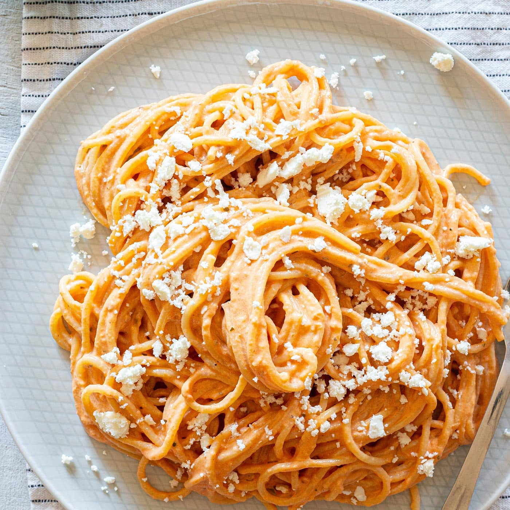

Spaghetti mexicano

Descripción
Un plato de pasta muy inusual pero muy delicioso.
Mi abuelo solia hacerlo, me enseñó y ahora se los comparto a ustedes.
¡Esto es para vos Eduardo! .Espero que a todos les guste también ¡Vamos a Disfrutar!
Ingredientes
- 2 cucharadas de aceite vegetal
- 4 mitades de pechuga de pollo deshuesadas y sin piel
- 1 paquete (12 onzas) de fideos espagueti, partidos por la mitad
- 5 tomates roma (ciruela), picados
- 1 cebolla grande , picada
- ½ cucharada de comino molido
- 2 ½ cucharaditas de chile en polvo
- sal y pimienta para probar
- 1 ½ tazas de agua
- 1 taza de queso cheddar rallado
Pasos
- Caliente 1 cucharada de aceite vegetal en una sartén grande a fuego medio.
- Cocine las pechugas de pollo en aceite hasta que estén bien doradas por fuera.
- Retirar de la sartén y esperar.
- Agregue el aceite restante a la sartén y agregue los espaguetis partidos.
- Cocine, revolviendo constantemente hasta que los espaguetis se doren.
- Escurra el exceso de aceite y agregue los tomates y la cebolla.
- Corte las pechugas de pollo y devuélvalas a la sartén.
- Sazone con comino, chile en polvo, sal y pimienta.
- Vierta agua, cubra y cocine a fuego medio-bajo hasta que la pasta esté tierna y el agua se haya absorbido, aproximadamente 10 minutos.
- Verifique hasta el final y agregue más agua si es necesario.
- Vierta la mezcla de pollo en tazones para servir y decore con queso rallado.